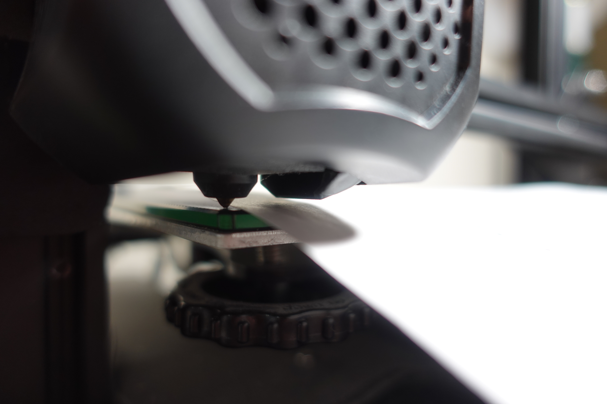

Stepper motors control the movement of the printer extrudger (nozzle). With htem engaged, moving the printer head manually is nearly impossible. Find in the menu the control for the stepper motors and have them turned off temporarily.

Stepper motors control the movement of the printer extrudger (nozzle). With htem engaged, moving the printer head manually is nearly impossible. Find in the menu the control for the stepper motors and have them turned off temporarily.
The build plate should be cleaned before and after every printing session. The reason is that plastic, dust, dirt, and whatever else can make adhering to the build plate difficult. Use only soap and water followed by thoroughly drying the build plate. Wipe build plate with 90% rubbing alcohol to cut down on grease and soap.

Once the build plate has been cleaned, re-attach it to the machine via the instructions specific to your printer. Once attached, set the machine to auto-home or auto-zero. Doing so will return the extruder to x=0, y=0, and z=0. If there is no auto feature, set these coordinates manually.

The paper is used as a gauge so that there is just enough of a gap between the nozzle and the build plate for filament to be laid down. This first corner should be adjusted so that there is a small amount of friction from the nozzle 'pinching' the paper on the build plate, but the paper should still be able to move without much force.
With one corner done, it is time to move the nozzle to the other corners. Do not move along the z axis (vertical), only horizontal. This can be done manually by turning off the stepper motors or automatically by putting in coordinates for the extruder. At each corner there should be a screw or thumbwheel that can be turned to raise or lower the build plate.

The final step in the process is to double check that each corner is properly leveled. Failing to do so means taking a risk that the print will fail. If that happens, the whole thing must start over. Once everything looks good, it's time to start up the printer!